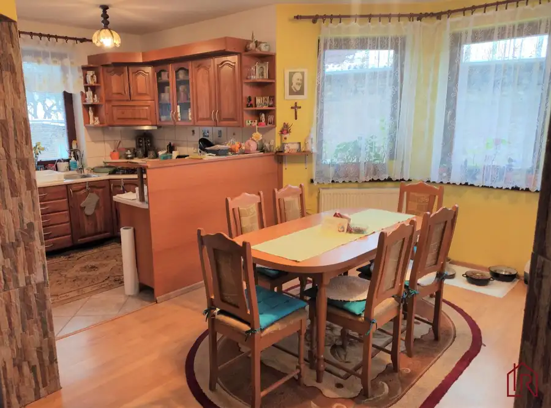

Moderný rodinný dom Kendice, klimatizácia, garáž
Kendice
- Dispozícia4-izbový
- Plocha122 m²
- Poschodie0. z 2
- Stavúplne prerobený
- Vlastníctvoosobné
- Energetická triedaA
O nehnuteľnosti
Impulz Real a Ing. Oľga Sabolová Vám ponúka na predaj moderný rodinný dom v Kendiciach s úžitkovou plochou 122 m², pozemkom 208 m², krbom, terasou, klimatizáciou a krytým parkovaním.
Interaktívny pôdorys nájdete na našej stránke Impulz Real:
https://floorplanner.com/projects//spaceplanner
Dom s úžitkovou plochou 122 m² bol skolaudovaný v roku 2023 a tvorí jednu časť dvojdomu. Ponúka príjemné spojenie svetlého interiéru, praktickej dispozície, vlastného pozemku a technológií, ktoré spríjemňujú každodenné bývanie. Ak hľadáte bývanie pre rodinu, kde má každý svoje miesto a zároveň môžete tráviť spoločný čas v útulnej dennej časti či na zastrešenej terase, táto nehnuteľnosť môže byť príjemnou voľbou.
ZÁKLADNÉ INFORMÁCIE
• úžitková plocha domu: 122,44 m²
• výmera pozemku: 208 m² + podiel na prístupovej ceste
• počet izieb: 4
• počet podlaží: 2
• kolaudácia: 2023
• dve kúpeľne s WC
• kryté parkovanie
• kompletne oplotený pozemok
• zastrešená terasa
• záhradný domček
• možnosť nabíjania elektromobilu
DISPOZÍCIA, KTORÁ DÁVA ZMYSEL
Prízemie – denná časť
Po vstupe do domu vás privíta svetlá denná časť, ktorej prirodzeným centrom je obývacia izba s krbom.
Obývací priestor plynulo nadväzuje na jedálenskú časť a plne vybavenú kuchyňu, vďaka čomu vzniká príjemný otvorený priestor na spoločné chvíle s rodinou aj návštevami.
Z dennej časti vedie priamy vstup na zastrešenú terasu s rozmermi 7 × 1,5 m, ktorá ponúka príjemné miesto na rannú kávu, letné posedenie alebo pokojný večer.
Na prízemí sa nachádza aj:
• kúpeľňa so sprchovacím kútom a WC
• technická miestnosť
• praktický úložný priestor
Poschodie – nočná časť
Poschodie je riešené ako pokojná súkromná zóna domácnosti. K dispozícii sú tri samostatné izby, ktoré poskytujú dostatok priestoru a súkromia pre jednotlivých členov rodiny. Na poschodí sa zároveň nachádza druhá kúpeľňa s toaletou.
EXTERIÉR A PRAKTICKÉ ZÁZEMIE
Pozemok je kompletne oplotený a upravený zámkovou dlažbou. Myslelo sa pritom aj na praktické každodenné fungovanie domácnosti.
Súčasťou exteriéru je:
• zastrešená terasa 7 × 1,5 m
• parkovací prístrešok 5 × 5 m
• elektricky ovládaná vstupná brána
• záhradný domček 4 × 3 m
• elektrické zásuvky v parkovacom prístrešku aj záhradnom domčeku
• možnosť nabíjania elektromobilu
Záhradný domček môže poslúžiť na uloženie bicyklov, záhradného náradia, sezónnych vecí či ďalšieho vybavenia, ktoré chcete mať poruke, ale nie priamo v dome.
MODERNÉ TECHNOLÓGIE PRE KAŽDODENNÝ KOMFORT
Dom je vybavený technológiami, ktoré prinášajú viac pohodlia a zároveň umožňujú lepšie prispôsobiť bývanie vašim potrebám.
K dispozícii sú:
• 2 klimatizačné jednotky Samsung a AUX – jedna na každom podlaží
• exteriérové žalúzie s možnosťou úplného zatemnenia miestností
• ovládanie žalúzií cez mobilnú aplikáciu aj diaľkový ovládač
• možnosť automatického nastavenia žalúzií podľa času dňa
• inteligentný termostat MIGO LINK s teplomerom a ovládaním cez mobilnú aplikáciu
• krb v obývacej izbe
INTERNETOVÉ PRIPOJENIE
Pre pohodlné fungovanie domácnosti je k dispozícii vysokorýchlostný internet od UPC s mesačným poplatkom približne 10 – 20€.
Zároveň je možné prevziať už nainštalovaný Starlink s mesačným poplatkom 29€.
BÝVANIE, KTORÉ JE PRIPRAVENÉ NA KAŽDODENNÝ ŽIVOT
Tento rodinný dom v Kendiciach môže osloviť každého, kto hľadá moderné a prakticky riešené bývanie bez potreby veľkých dodatočných úprav.
Ponúka 122 m² obytného priestoru, štyri izby, dve kúpeľne, vlastný pozemok s výmerou 208 m², zastrešenú terasu, kryté parkovanie, záhradný domček a moderné technologické vybavenie.Je to priestor, v ktorom sa dá prirodzene spojiť rodinný život, súkromie aj chvíle oddychu.
Pre bližšie informácie sa s dôverou môžete kedykoľvek obrátiť na rodinného realitného makléra: Ing. Oľga Sabolová , (certifikovaný maklér NARKS - Národná asociácia realitných kancelárií Slovenska).
Viac ako nehnuteľnosť. DOMOV V Impulz Real spájame profesionálny rozum s ľudským srdcom. Zabezpečíme Vám nielen kompletný a bezpečný servis (advokát, financovanie, energie) – kvalita je náš štandard, ale hlavne pochopenie pre Váš príbeh. Pomôžeme Vám s predajom aj Vašej nehnuteľnosti, prípadne nájsť domov, ktorý si zamilujete, a postaráme sa o Vás počas celého procesu. „Sme realitní experti so zmyslom pre rodinu." IMPULZ REAL – Vaša Rodinná Realitka, ktorej DÔVERUJETE
Parametre
| Rozloha pozemku | 208 m² |
|---|---|
| Zastavaná plocha | 120 m² |
| Celková rozloha | 122 m² |
| Úžitková plocha | 122 m² |
| Poschodie | prízemie |
| Počet poschodí | 2 |
| Počet izieb | 4 |
| Vlastníctvo | osobné |
| Stav | úplne prerobený |
| Odvoz odpadu | áno |
| Voda | verejný vodovod |
| El. napätie | 230/400V |
| Plyn | nie |
| Kanalizácia | áno |
| Internet | lokálny poskytovateľ |
| Kúpeľňa | vaňa a sprchovací kút |
| Vykurovanie | vlastné – kombinované |
| Terasa | áno |
| Pivnica | nie |
| Garáž | áno - 1 auto |
| Parkovanie | áno |
| Inžinierske siete | áno |
| Postavené z | tehla |
| Zariadenie | čiastočne |
| Zateplený objekt | áno |
| Strecha | po rekonštrukcii |
| Krb | áno |
| Klimatizácia | áno |
| Energetický certifikát | A |
| Predzáhradka | áno |
| Okná | plastové |
| Terén | rovina |
| Prístupová cesta | asfaltová cesta |
| Novostavba | áno |
| Dátum zverejnenia | 2. 9. 2026 |
Kde to je
Mohlo by Vás zaujímať
 Pozemok
110 022 €Pozemok Podhorany 1667m2, vhodný na výstavbu RD
Podhorany
1667 m²
NA PREDAJ – veľký pozemok v Podhoranoch pri Prešove (1 667 m²) s asfaltovým prístupom Ponúkame na predaj priestranný pozemok o výmere 1 667 m² (parc.…
Pozemok
110 022 €Pozemok Podhorany 1667m2, vhodný na výstavbu RD
Podhorany
1667 m²
NA PREDAJ – veľký pozemok v Podhoranoch pri Prešove (1 667 m²) s asfaltovým prístupom Ponúkame na predaj priestranný pozemok o výmere 1 667 m² (parc.…

Rodinné domy10 147 900 €Rodinný dom Richnava, 182m2, garáž, záhrada Richnava 4-izbový182 m² *** 4 izbový rodinný dom, Richnava *** *** dvojpodlažný rodinný dom *** *** dom postavený v roku 2006*** *** veľká záhrada, studňa *** *** tiché… Rodinné domy3
306 000 €Rodinný dom v radovej zástavbe, Prešov, Šalgovík
Prešov
4-izbový148 m²
Spoločnosť Impulz Real a Ing. Oľga Sabolová predstavujú NA PREDAJ rodinný dom v radovej zástavbe v žiadanej lokalite v Prešove s výbornou občianskou…
Rodinné domy3
306 000 €Rodinný dom v radovej zástavbe, Prešov, Šalgovík
Prešov
4-izbový148 m²
Spoločnosť Impulz Real a Ing. Oľga Sabolová predstavujú NA PREDAJ rodinný dom v radovej zástavbe v žiadanej lokalite v Prešove s výbornou občianskou…